circa v1.0 · macOS 14+your screen, in sync with the sun. a native mac menu-bar app that warms and dims your display as the sun sets where you are. it also stops LED backlight flicker. this page runs the same solar math on your location, right now:
joins the circa letter · the download link lands in your inbox · or download directly
why follow the sun?
your body clock is set by light. bright, blue-rich light during the day keeps you alert and anchors your circadian rhythm. the same light in the evening suppresses melatonin and pushes sleep later.
screens are the brightest, bluest thing most of us look at after sunset. warming and dimming them as the real sun goes down removes that signal, so evenings wind down the way they're supposed to and eyes stop fighting a small daylight-colored lamp in a dark room.
circa does this automatically, from your actual sunrise and sunset. nothing to remember, nothing to schedule.